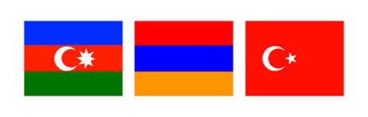
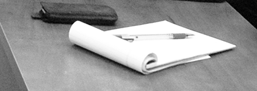

STEP INTO DIALOGUE: ARMENIA - AZERBAIJAN - TURKEY

MASTER CLASSES OF JOURNALISTS FROM AZERBAIJAN AND TURKEY
FOR THE YOUNG ARMENIAN COLLEAGUES
November 2006 - March 2007
Caucasus Center of Peace - Making Initiatives
By support of British Embassy in Armenia
Budget: GBP 5000
Caucasus Center of Peace - Making Initiatives
By support of British Embassy in Armenia
Budget: GBP 5000

I believe that the essence of our job is striving to reach to the truth whatever difficulties we face. One mustn’t ever forget that prejudice is the greatest enemy of journalists. Having done this job for more than 25 years, I’ve also learned very well that it’s never too late to correct a mistake.
■
Turkish press and one recent example on its stance against stereotypes
Report on meeting with mass-media and NGO representatives, November 29, 2006
■ Political journalism
Report on meeting with students and teaching Staff of H. Acharyan University, November 30, 2006
■
Yerevan diary of an Turkish journalist
Yes, I’m a virus for Armenians. Back to the churches in Armenia. The pull of faith. Akhtamar church. Obsessions. Image of Turkey. Hospitality from uneasy neighbors. Economic difficulties. "Ararat" is everywhere in Yerevan. Freedom of the press. Impressions from streets. The writer weighs in. Changing face of Yerevan. Genocide museum. Documents and counter-documents. Can history be so abstract? A wedding ceremony. Tstesootyun (goodbye) to Yerevan. Open bazaar. Andranik pasha. National anthem.
■
The principals of international journalism do not work at all in Armenia
What struck me more was that instead of asking me questions concerning Turkey, getting interested in politics, economy, social state of population of our country, many journalists began to tell ME, I emphasize “me”, about Turkey, explain, prove me what is really happening there (!). Moreover, they all talked about it in a voice that requires no objection.
■
Hrant Dink was murdered by Article 301
Special case. January 19, 2007: It happened purely because the negligence of the Turkish Government
■
Armenian FM Vartan Oskanian
gives exclusive interview to TNA
Missed opportunities. Genocide recognition no precondition. Article 301. Pamuk's novels. Armenian Constitution.
■ Senior ARF party official Giro Manoyan speaks to TNA: "The perfect plan would be the treaty of sevres"
Genocide was done by govt, not people. No need for arbitration. Genocide isn't the only problem. When Gul and Oskanian met. Armenians in Turkey are like hostages. Harput wallpaper. If society examines its past.
■ Armenian Parliament speaker Tigran Torosyan: "Orhan Pamuk: We're proud of him"
Тreaty of Кars. Тurkish deputies. Аrarat as a symbol. Вe can't forget the past. Тhey know the truth.
■ Omer Engin Lutem, director of the Armenian Research Institute: "Armenia must first abandon its historical ambitions"
Oskanian is emotional. No one convicted for recognizing "Genocide". "Western Armenia"
Report on meeting with mass-media and NGO representatives, November 29, 2006
■ Political journalism
Report on meeting with students and teaching Staff of H. Acharyan University, November 30, 2006
Yes, I’m a virus for Armenians. Back to the churches in Armenia. The pull of faith. Akhtamar church. Obsessions. Image of Turkey. Hospitality from uneasy neighbors. Economic difficulties. "Ararat" is everywhere in Yerevan. Freedom of the press. Impressions from streets. The writer weighs in. Changing face of Yerevan. Genocide museum. Documents and counter-documents. Can history be so abstract? A wedding ceremony. Tstesootyun (goodbye) to Yerevan. Open bazaar. Andranik pasha. National anthem.
What struck me more was that instead of asking me questions concerning Turkey, getting interested in politics, economy, social state of population of our country, many journalists began to tell ME, I emphasize “me”, about Turkey, explain, prove me what is really happening there (!). Moreover, they all talked about it in a voice that requires no objection.
Special case. January 19, 2007: It happened purely because the negligence of the Turkish Government
Missed opportunities. Genocide recognition no precondition. Article 301. Pamuk's novels. Armenian Constitution.
■ Senior ARF party official Giro Manoyan speaks to TNA: "The perfect plan would be the treaty of sevres"
Genocide was done by govt, not people. No need for arbitration. Genocide isn't the only problem. When Gul and Oskanian met. Armenians in Turkey are like hostages. Harput wallpaper. If society examines its past.
■ Armenian Parliament speaker Tigran Torosyan: "Orhan Pamuk: We're proud of him"
Тreaty of Кars. Тurkish deputies. Аrarat as a symbol. Вe can't forget the past. Тhey know the truth.
■ Omer Engin Lutem, director of the Armenian Research Institute: "Armenia must first abandon its historical ambitions"
Oskanian is emotional. No one convicted for recognizing "Genocide". "Western Armenia"

It is South Caucasus where besides the fact that the sun is striking right into eyes, one needs to be extremely cautious, bind oneself, observe each step and word.
■
Problems of mass media
in modern Azerbaijan
Report on meeting with students and teaching Staff of H. Acharyan University, November 30, 2006
■
Yerevan diary
of an Azerbaijanian journalist
In the beginning there was a word… and this word was "barev". Morning. Close to lunch Press-conference. A student from Istanbul. Epatage lessons. All for the best. Hrachya Acharyan. Panarmenian takes the lead of the steering wheel! Total bad luck. How Elmir Mirzoev terrorized the Armenian youth. House Museum of the great Parajanov. Mmeeting in "Pressing" club. Spaniel who doesn’t bite Azerbaijanians. Echmiatsin - a religious centre of Armenians. Oh vernisazh, oh vernisazh… Hospitality of Aleksey Manvelyan. Back home. The free flight of Alekper
■
Interview with chairman of CCPMI Georgi Vanyan: We cultivate only parasites
Unfortunately, each attempt to reconsider and review "tourist-restaurant peacemaking" arouses the command dislike and enmity of NGO monstrous privatizing the sphere of a public dialog which considers that they have a good reputation in the west… and it is more than enough.
in modern Azerbaijan
Report on meeting with students and teaching Staff of H. Acharyan University, November 30, 2006
of an Azerbaijanian journalist
In the beginning there was a word… and this word was "barev". Morning. Close to lunch Press-conference. A student from Istanbul. Epatage lessons. All for the best. Hrachya Acharyan. Panarmenian takes the lead of the steering wheel! Total bad luck. How Elmir Mirzoev terrorized the Armenian youth. House Museum of the great Parajanov. Mmeeting in "Pressing" club. Spaniel who doesn’t bite Azerbaijanians. Echmiatsin - a religious centre of Armenians. Oh vernisazh, oh vernisazh… Hospitality of Aleksey Manvelyan. Back home. The free flight of Alekper
Unfortunately, each attempt to reconsider and review "tourist-restaurant peacemaking" arouses the command dislike and enmity of NGO monstrous privatizing the sphere of a public dialog which considers that they have a good reputation in the west… and it is more than enough.

Our societies do not lead a real life. They are constantly reproducing pseudo-ideals, imaginary figures, images, dreams which have already been materialized and is around us and which, in our fatal vacancy, we need to revive again and again.
■
Our enfant terrible
- the culture
Report on meeting with students of Russian-Armenian (Slavonic) University, December 1, 2006
■
Wars of dolma
- a wreath of absurdity:
Eschatology
of "Our Culture"
The hosts of the “Wars of Dolma” are not housewives at all, as can be judged from the name. Children, schoolchildren, students, hikers and even respectable men and women, professors and academicians are involved here.
Two conversations with an active journalist and a beginner: provocation and dialogue
■ We eat dolma and play the duduk
Yerevan is a small yet very beautiful city, advanced and clean. But there are no elements of cosmopolitanism here. It’s hard to live in a rather closed, mono-ethnic society. The capital city shouldn’t be mono-ethnic.
■ We are living in exclusive times
Today, there is no aesthetic postulate that is all the aesthetic currents are possible. And if everything is possible, then what is it like? It is simply a sarcastic laughter.
Report on meeting with students of Russian-Armenian (Slavonic) University, December 1, 2006
The hosts of the “Wars of Dolma” are not housewives at all, as can be judged from the name. Children, schoolchildren, students, hikers and even respectable men and women, professors and academicians are involved here.
■ We eat dolma and play the duduk
Yerevan is a small yet very beautiful city, advanced and clean. But there are no elements of cosmopolitanism here. It’s hard to live in a rather closed, mono-ethnic society. The capital city shouldn’t be mono-ethnic.
■ We are living in exclusive times
Today, there is no aesthetic postulate that is all the aesthetic currents are possible. And if everything is possible, then what is it like? It is simply a sarcastic laughter.

SELECTION OF JOURNALISTIC WORKS CREATED BY
STUDENTS AFTER THE WORKSHOPS
■
Varditer Mkrtchyan: You remain to be my enemy, but hatred is gone
All of us grew tired of meaningless and dull enmity and blind hatred. Co-existence of our nations is possible. And it is inevitable.
■ Tigran Tovmasyan: I am black
The most positive emotion is the gratitude of a hungry dog for which somebody finally had a pity and gave food. I despise myself for this gratitude, since a similar attitude should be very natural and I don’t have to perceive it in a special way.
■ Melissa Boz: I introduced my culture
Even it was for a short time we were in Armenia's streets. When we went to jeweler bazaar people there didn't mislead me and just the opposite of my university rector they were so compassionate with her.
■ Anna Tavakalyan: The enemy image. I am against the war
Unfortunately, adults do not ask us, the youth, what we think of and how we treat their games of war. Our desires as to what we really want are of no interest to anybody.
■ Anahit Grigoryan: Why are we fighting?
The fact is that a living person may always be more hugely beneficial to his/her country than the dead one. And nothing will change even if he will be declared a hero or a huge monument will be erected on his grave at the expense of the government.
■ Inessa Dimidkova: How long are we supposed to remain enemies?
I hope you do not consider me too ignorant to understand the degree of seriousness of the existing events and that I shut my eyes to it.
■ Ani Martirosyan: A story of a village
Green fields formed the border between the villages. I was looking into the distance. And I was wondering to know who was living over there, what they were engaged in …
■ Nikolay Torosyan: The enemy image in mass media and national thinking
People in our country, certainly, also read newspapers, listen to the radio and watch TV. But in historical questions, the memories of a grey-haired aksakal are respected and welcomed more than all Mass Media taken together.
■
Enemy image: the Pressing Club debate
Years ago, when the march with torches to the Genocide Memorial and museum took place, a group of young people were trying to burn the Turkish flag. The police took the flag and didn’t allow them to do that. But today we can see on television how that flag is burnt during the march.
■
Announcement CCPMI
During the stay of the journalists from Azerbaijan and Turkey in Yerevan, scandalous distortions and disinformation were made by the Armenian PanARMENIAN News Agency and Russian REGNUM News Agency.
All of us grew tired of meaningless and dull enmity and blind hatred. Co-existence of our nations is possible. And it is inevitable.
■ Tigran Tovmasyan: I am black
The most positive emotion is the gratitude of a hungry dog for which somebody finally had a pity and gave food. I despise myself for this gratitude, since a similar attitude should be very natural and I don’t have to perceive it in a special way.
■ Melissa Boz: I introduced my culture
Even it was for a short time we were in Armenia's streets. When we went to jeweler bazaar people there didn't mislead me and just the opposite of my university rector they were so compassionate with her.
■ Anna Tavakalyan: The enemy image. I am against the war
Unfortunately, adults do not ask us, the youth, what we think of and how we treat their games of war. Our desires as to what we really want are of no interest to anybody.
■ Anahit Grigoryan: Why are we fighting?
The fact is that a living person may always be more hugely beneficial to his/her country than the dead one. And nothing will change even if he will be declared a hero or a huge monument will be erected on his grave at the expense of the government.
■ Inessa Dimidkova: How long are we supposed to remain enemies?
I hope you do not consider me too ignorant to understand the degree of seriousness of the existing events and that I shut my eyes to it.
■ Ani Martirosyan: A story of a village
Green fields formed the border between the villages. I was looking into the distance. And I was wondering to know who was living over there, what they were engaged in …
■ Nikolay Torosyan: The enemy image in mass media and national thinking
People in our country, certainly, also read newspapers, listen to the radio and watch TV. But in historical questions, the memories of a grey-haired aksakal are respected and welcomed more than all Mass Media taken together.
Years ago, when the march with torches to the Genocide Memorial and museum took place, a group of young people were trying to burn the Turkish flag. The police took the flag and didn’t allow them to do that. But today we can see on television how that flag is burnt during the march.
During the stay of the journalists from Azerbaijan and Turkey in Yerevan, scandalous distortions and disinformation were made by the Armenian PanARMENIAN News Agency and Russian REGNUM News Agency.